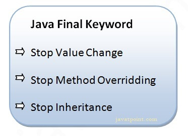

//Note: Multiple inheritance is not supported in Java through class. //In java programming, multiple and hybrid inheritance is supported through interface only.
//some time u see a word Concrete method <-- (i.e method with body)
java is high level object oriented programming language developed by the sunmicrosystem in 1995 after that it owned by the ORACLE. it uses a JVM(java virtual machine) as a run time environment. due to this it is also a platform independent.
James Gosling is known as the father of Java.
1. Simple
2. object-oriented
3. platform independent
4. secured
5. robust
6. multithread
7. high performance
1. In java, a class is a blueprint or template for creating objects,
2. And an object an instance of a class.
3. Any Entity that has state and behavior is know as object.
4. For example: a chair, pen, table, keyboard, bike etc..
a. When an object acquires all the properties and behavours of a parent object, it is known as inheritance.
b. it provides code reusability.
c.it is used to achive runtime polymorphism.
a.If one task is perfomed in different ways, it is know as polymorphism.
b.In java, we used method overloading and method overriding to achieve polymorphism.
a. Hiding internal details and showing functionality is known as abstraction. For example phone call, we don't know the internal processing.
b.In Java, we use abstract class and interface to achieve abstraction.
a. Binding (or wrapping) code and data together into a single unit are known as encapsulation. For example, a capsule, it is wrapped with different medicines.
b.A java class is the example of encapsulation. Java bean is the fully encapsulated class because all the data members are private here.
A.State = Represent the data of an object
B.Behavior = Represents the behavior of an object such as deposit, withdraw,etc.
C.Identity = It is used internally by the JVM to identify each object uniquely.
class Class_Name {
field;
method;
constructor;
blocks
nested classes or interface
}
1. A variable which is created inside the class but outside the method is known as an instance variable.
2. Instance variable doesn't get memory at compile time.
3. It gets memory at runtime when an object or instance is created.
1 The new keyword is used to allocate memory at runtime.
2. All objects get memory in Heap memory area.
There are 3 ways to initialize object in Java.
By reference variable
By method
By constructor
By new keyword
By newInstance() method
By clone() method
By deserialization
By factory method etc.
1. Constructor is a special method having the same name as the class name.
2. constructor have no any return type
3. construcotor are of two type A . Non-parametrized constructor B. Parameratrized constructor.
4. constructor is used to initiate the object.
5. if their is no any constructor present in the class JVM Automatically added a default constructor.
1. function overloading is the process of performing the multiple task with the same function by varying the number of parameter of the function/method.
# OR
If a class has multiple methods having same name but different in parameters, it is known as Method Overloading.
1. If subclass (child class) has the same method as declared in the parent class, it is known as method overriding in Java.
a. The method must have the same name as in the parent class
b. The method must have the same parameter as in the parent class.
c. There must be an IS-A relationship (inheritance).
1. static keyword is basically used for the memory management/optimization.
2. it can be use during the variable creation(know as instance variable) , in the method creation(also know as class mehod)
3. The static variable gets memory only once in the class area at the time of class loading.
4.The static variable can be used to refer to the common property of all objects (which is not unique for each object), for example, the company name of employees, college name of students, etc.
It makes your program memory efficient (i.e., it saves memory).
1. In Java, this is a <b>reference variable<b> that refers to the current object.
1. this can be used to refer current class instance variable.(i.e:to remove the ambiguity if the parameter and instance variable having same name)
2. this can be used to invoke current class method (implicitly)
3. this() can be used to invoke current class constructor.(it is used for constructor chaining OR It is used to reuse the constructor. )
// you have to only know three usages
4. this can be passed as an argument in the method call.
5. this can be passed as argument in the constructor call.
6. this can be used to return the current class instance from the method.
Notes : for example see the ConceptOfThisKeyword in the repo
https://github.com/jigneshsharma123/javaString-Practice
visit : https://www.javatpoint.com/inheritance-in-java
1. This feature was introduced in Java 5.
2. it is possible to override method by changing the return type if subclass overrides any method whose return type is Non-Primitive but it changes its return type to subclass type.
class Animal {
Animal get() {
return this;
}
}
class Dog extends Animal {
@Override
Dog get() {
return this;
}
}
1. The super keyword in Java is a reference variable which is used to refer immediate parent class object.
2. Whenever you create the instance of subclass, an instance of parent class is created implicitly which is referred by super reference variable.
A. uper can be used to refer immediate parent class instance variable.
B. super can be used to invoke immediate parent class method.
c. super() can be used to invoke immediate parent class constructor.
1. The final keyword in java is used to restrict the user.
2. Final can be (Var, method, and class)

1. Polymorphism in Java is a concept by which we can perform a single action in different ways.
2.Let's first understand the upcasting before Runtime Polymorphism.
class A{}
class B extends A{}
A a=new B();//upcasting
class Bike{
void run(){System.out.println("running");}
}
class Splendor extends Bike{
void run(){System.out.println("running safely with 60km");}
public static void main(String args[]){
Bike b = new Splendor();//upcasting
b.run();
}
}
//op=> running safely with 60km.
Dog d=new Animal();//Compilation error
Dog d=(Dog)new Animal();
//Compiles successfully but ClassCastException is thrown at runtime
1. A class which is declared with the abstract keyword is known as an abstract class in Java.
2. Abstraction is a process of hiding the implementation details and showing only functionality to the user.
3. There are two ways to achieve abstraction in java
a. Abstract class (0 to 100%)
b. Interface (100%)
4. It can have abstract and non-abstract methods.
abstract class A{}
abstract void printStatus();//no method body and abstract
abstract class Bike{
abstract void run();
}
class Honda4 extends Bike{
void run(){System.out.println("running safely");}
public static void main(String args[]){
Bike obj = new Honda4();
obj.run();
}
}
1. A factory method is a method that returns the instance of the class.
1. In Java, An interface is a collection of abstract methods.
2. It is used to achieve abstraction.
3. By interface, we can support the functionality of multiple inheritance


interface printable{
void print();
}
class A6 implements printable{
public void print(){System.out.println("Hello");}
public static void main(String args[]){
A6 obj = new A6();
obj.print();
}
}
1. Private: The access level of a private modifier is only within the class. It cannot be accessed from outside the class.
2. Default: The access level of a default modifier is only within the package. It cannot be accessed from outside the package. If you do not specify any access level, it will be the default.
3. Protected: The access level of a protected modifier is within the package and outside the package through child class. If you do not make the child class, it cannot be accessed from outside the package.
4. Public: The access level of a public modifier is everywhere. It can be accessed from within the class, outside the class, within the package and outside the package.
This table illustrates the accessibility of members with different access modifiers within and outside a Java class.
| Access Modifier | Within Class | Within Package | Outside Package (by Subclass Only) | Outside Package |
|---|---|---|---|---|
| Private | Y | N | N | N |
| Default | Y | Y | N | N |
| Protected | Y | Y | Y | N |
| Public | Y | Y | Y | Y |